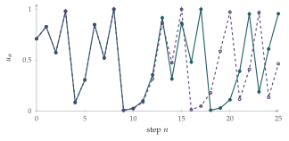

The sequence of numbers \(u_0, u_1, \ldots\) is given by \(u_0 = u\) and, for \(n \geq 0\), \[u_{n+1} = 4u_n(1 - u_n). \tag{$*$}\] In the case \(u = \sin^2\theta\) for some given angle \(\theta\), write down and simplify expressions for \(u_1\) and \(u_2\) in terms of \(\theta\). Conjecture an expression for \(u_n\) and prove your conjecture.
The sequence of numbers \(v_0, v_1, \ldots\) is given by \(v_0 = v\) and, for \(n \geq 0\), \[v_{n+1} = -pv_n^2 + qv_n + r,\] where \(p\), \(q\) and \(r\) are given numbers, with \(p \neq 0\). Show that a substitution of the form \(v_n = \alpha u_n + \beta\), where \(\alpha\) and \(\beta\) are suitably chosen, results in the sequence \((*)\) provided that \[4pr = 8 + 2q - q^2.\] Hence obtain the sequence satisfying \(v_0 = 1\) and, for \(n \geq 0\), \(v_{n+1} = -v_n^2 + 2v_n + 2\).
The hook
The rule \(u_{n+1} = ku_n(1 - u_n)\) is the logistic map, the simplest model of a population with limited resources: \(u_n\) is the population in year \(n\) as a fraction of the maximum the environment can support, \(k\) is the breeding rate, and the factor \(1 - u_n\) represents overcrowding. In 1976 the biologist Robert May published a short article in Nature called “Simple mathematical models with very complicated dynamics”. He showed that, as \(k\) increases towards \(4\), this one-line rule goes from settling down, to oscillating, to behaving in a way that looks completely random. It became one of the founding examples of chaos.
Chaotic systems are usually impossible to solve: there is no formula for \(u_n\), and the only way to find \(u_{100}\) is to compute all the terms before it. This question finds the exception. At \(k = 4\), the most chaotic value of all, there is a formula, and it explains exactly why the sequence is unpredictable.
Before you start
Where have you seen the expression \(4s(1 - s)\) before, with \(s = \sin^2\theta\)? Which identity connects \(\sin^2\theta\), \(\cos^2\theta\) and \(\sin 2\theta\)?
If \(s = \sin^2\theta\) then \(1 - s = \cos^2\theta\), so \(4s(1 - s) = 4\sin^2\theta\cos^2\theta = (2\sin\theta\cos\theta)^2 = \sin^2 2\theta\). The map \(s \mapsto 4s(1 - s)\) is the double-angle formula in disguise.
Working it through
Stage 1 Guessing the pattern
With \(u_0 = \sin^2\theta\), the identity above gives \[u_1 = 4\sin^2\theta\cos^2\theta = \sin^2 2\theta, \qquad u_2 = 4\sin^2 2\theta\cos^2 2\theta = \sin^2 4\theta.\]
What happens to the angle at each step? What is your conjecture for \(u_n\)?
The angle doubles each time, so we conjecture \(u_n = \sin^2(2^n\theta)\).
Stage 2 Proving it
Which proof method fits a statement about every term of a sequence defined by a rule from one term to the next?
Induction. The statement holds for \(n = 0\), since \(u_0 = \sin^2\theta = \sin^2(2^0\theta)\). Suppose \(u_n = \sin^2(2^n\theta)\) for some \(n\). Then \[u_{n+1} = 4\sin^2(2^n\theta)\bigl(1 - \sin^2(2^n\theta)\bigr) = \bigl(2\sin(2^n\theta)\cos(2^n\theta)\bigr)^2 = \sin^2(2^{n+1}\theta),\] which is the statement for \(n + 1\). So \(u_n = \sin^2(2^n\theta)\) for all \(n \geq 0\).■
Notice that every starting value \(u\) in \([0, 1]\) can be written as \(\sin^2\theta\) (take \(\theta = \arcsin\sqrt u\)), so this solves the logistic map with \(k = 4\) for every start in \([0, 1]\).
Stage 3 Changing variables
Substitute \(v_n = \alpha u_n + \beta\) into the rule for \(v_{n+1}\). You need the result to be \(u_{n+1} = 4u_n - 4u_n^2\). How many conditions does that give, and how many unknowns do you have?
Substituting, \[\alpha u_{n+1} + \beta = -p(\alpha u_n + \beta)^2 + q(\alpha u_n + \beta) + r,\] so \[u_{n+1} = -p\alpha\, u_n^2 + (q - 2p\beta)\, u_n + \frac{-p\beta^2 + q\beta + r - \beta}{\alpha}.\] For this to be \(4u_n - 4u_n^2\) we need three things: \[p\alpha = 4, \qquad q - 2p\beta = 4, \qquad -p\beta^2 + (q - 1)\beta + r = 0.\] The first two fix \(\alpha = 4/p\) and \(\beta = (q - 4)/(2p)\). There are no unknowns left, so the third equation is a genuine condition on \(p\), \(q\) and \(r\). Substituting \(\beta\) and multiplying by \(4p\), \[-(q - 4)^2 + 2(q - 1)(q - 4) + 4pr = 0,\] and expanding, \(-(q^2 - 8q + 16) + (2q^2 - 10q + 8) + 4pr = 0\), that is \(q^2 - 2q - 8 + 4pr = 0\), or \[4pr = 8 + 2q - q^2. \qed\]
Three equations but only two unknowns: this is why a condition appears. Can you see, before calculating, why a general quadratic map should not always be equivalent to \((*)\)? (Think about what a linear change of variable can and cannot change.)
Stage 4 The example
For \(v_{n+1} = -v_n^2 + 2v_n + 2\) we have \(p = 1\), \(q = 2\), \(r = 2\), and \(4pr = 8 = 8 + 4 - 4\), so the condition holds. Then \(\alpha = 4\) and \(\beta = -1\), so \(v_n = 4u_n - 1\), with \(u_n\) satisfying \((*)\). Since \(v_0 = 1\), \(u_0 = \frac12 = \sin^2\frac{\pi}{4}\), so \[u_n = \sin^2\!\Bigl(\frac{2^n\pi}{4}\Bigr), \qquad v_n = 4\sin^2\!\Bigl(\frac{2^n\pi}{4}\Bigr) - 1 = 1 - 2\cos\Bigl(\frac{2^n\pi}{2}\Bigr).\] This gives \(v_0 = 1\), \(v_1 = 3\) and \(v_n = -1\) for all \(n \geq 2\). (Check directly: \(-1 + 2 + 2 = 3\), then \(-9 + 6 + 2 = -1\), then \(-1 - 2 + 2 = -1\).)■
The particular starting value was chosen so that the angle lands on a multiple of \(\pi\) and the sequence stops. That hides the interesting part, which comes next.
Looking back
Recognise the disguise. The map \(s \mapsto 4s(1 - s)\) became angle doubling once we wrote \(s = \sin^2\theta\).
Conjecture, then prove by induction. Two terms suggested the pattern; induction proved it.
Count equations and unknowns. A linear substitution has two free parameters, a quadratic has three coefficients, so one condition must be left over.
What’s really going on
Why the sequence is unpredictable
The formula \(u_n = \sin^2(2^n\theta)\) looks like the end of the story: we can compute any term directly. But look at what it says. Since \(\sin^2\) has period \(\pi\), only the value of \(2^n\theta\) modulo \(\pi\) matters. Write \(\theta = \pi x\) with \(0 \leq x < 1\), and write \(x\) in binary: \[x = 0.b_1 b_2 b_3 \ldots \quad(\text{base } 2).\] Multiplying by \(2\) shifts the binary point one place to the right, and taking the result modulo \(1\) throws away the digit that crosses the point. So \(u_n\) depends only on the binary digits of \(x\) from \(b_{n+1}\) onwards. Each step of the logistic map reads one more digit of the starting value and discards one from the front.
This is sensitive dependence on initial conditions, the defining feature of chaos. Two starting values that agree to \(20\) binary places (about six decimal places) produce sequences that agree for about \(20\) steps and then have nothing to do with each other (Figure 8.7.1). To predict \(u_{100}\), you need to know \(u_0\) to \(100\) binary places. Any error in the starting angle, however small, doubles at every step. (An error in the population \(u\) itself does not grow by exactly the same factor each time, since the map stretches some parts of \([0, 1]\) more than others, but on average it grows at the same rate.) The formula does not help: it simply makes the mechanism visible.

Periodic points everywhere
The formula also finds every cycle of the map. The sequence returns to its starting value after \(N\) steps exactly when \(\sin^2(2^N\theta) = \sin^2\theta\), that is, when \(2^N\theta \equiv \pm\theta \pmod{\pi}\). So \(\theta = m\pi/(2^N - 1)\) or \(\theta = m\pi/(2^N + 1)\) gives a point of period dividing \(N\). For example \(\theta = \pi/5\) satisfies \(4\theta \equiv -\theta\), so \(\sin^2\frac{\pi}{5} \to \sin^2\frac{2\pi}{5} \to \sin^2\frac{4\pi}{5} = \sin^2\frac{\pi}{5}\) is a \(2\)-cycle. There are periodic points of every period, and they are dense in \([0, 1]\): in every interval, however small, there is a starting value whose sequence repeats. Yet each one is unstable, because any error doubles. Dense periodic points that repel everything nearby are the second hallmark of chaos.
The road to chaos
For smaller \(k\) there is no formula, and the behaviour depends dramatically on \(k\) (Figure 8.7.2). For \(1 < k < 3\) every sequence starting in \((0, 1)\) settles down to the fixed point \(1 - 1/k\). At \(k = 3\) the fixed point becomes unstable and a \(2\)-cycle takes over (this is the subject of STEP II 2002 Q5; see the exercises). At \(k = 1 + \sqrt6 \approx 3.449\) the \(2\)-cycle gives way to a \(4\)-cycle, then an \(8\)-cycle, with the doublings coming faster and faster, until at \(k \approx 3.5699\) the cycles have infinite length and chaos begins. Inside the chaotic region are windows of order: the clearest, near \(k = 3.83\), contains a \(3\)-cycle, which is the subject of Section 8.8.

In 1975 Mitchell Feigenbaum, working at Los Alamos with a programmable pocket calculator, measured the values of \(k\) at which the period doubles: \(k_1 = 3\), \(k_2 \approx 3.4495\), \(k_3 \approx 3.5441\), \(k_4 \approx 3.5644\), …. He noticed that the gaps shrink by a constant factor, \[\frac{k_{n} - k_{n-1}}{k_{n+1} - k_{n}} \to 4.6692\ldots,\] and then, astonishingly, that the same number \(4.6692\ldots\) appears for \(x \mapsto k\sin(\pi x)\) and for every other smooth map with a single hump that is rounded like a parabola at its top (a quadratic maximum). The constant is universal for that whole class; maps whose hump is flatter at the top, such as one shaped like \(-x^4\), have universal constants of their own. It has since been measured in experiments on dripping taps, heated fluids and electronic circuits. Explaining why required ideas borrowed from the physics of phase transitions, and was only made rigorous by Oscar Lanford in 1982, with the help of a computer.
The same trick, three times
The substitution in part (ii) is an example of conjugacy: two maps are conjugate if a change of variable turns one into the other, and then they have exactly the same dynamics. The question shows that every quadratic map satisfying the condition is conjugate to the logistic map with \(k = 4\), which in turn is angle doubling in disguise, through \(u = \sin^2\theta\). (Strictly, this last link is a semiconjugacy: \(\theta\) and \(\pi - \theta\) give the same \(u\), so the change of variable is not one-to-one. The logistic map is genuinely conjugate to the tent map, \(t \mapsto 2t\) for \(t \leq \frac12\) and \(t \mapsto 2 - 2t\) for \(t \geq \frac12\), through \(u = \sin^2\frac{\pi t}{2}\), which is one-to-one on \([0, 1]\).) In Section 2.8 you met \(x \mapsto x^2 - 2\), solved by \(x = 2\cos\theta\) with the angle doubling at each step; it satisfies the condition too (try it). So these are all the same map in disguise. In Section 8.8, a third member of the family appears: a map built from straight lines, the tent map.
The thinking skill
A good substitution can turn a complicated rule into a simple one. Look for a change of variable that turns the problem into one you already understand.
Here \(u = \sin^2\theta\) turned a quadratic map into angle doubling, and a linear substitution turned a whole family of quadratics into one. At university, conjugacy is a central tool: in dynamical systems, in linear algebra (diagonalising a matrix is choosing coordinates in which it is simple), and in group theory.
Try this next
Cycles of the logistic map. (From STEP II, 2002.) The sequence \(x_n\) satisfies \(x_{n+1} = kx_n(1 - x_n)\).
Prove that, if \(0 < k < 4\) and \(0 < x_0 < 1\), then \(0 < x_n < 1\) for all \(n\).
Given that \(x_0 = x_1 = x_2 = \cdots = a\), with \(a \neq 0\) and \(a \neq 1\), find \(k\) in terms of \(a\).
Given instead that \(x_0 = x_2 = x_4 = \cdots = a\), with \(a \neq 0, 1\), show that \(ab^3 - b^2 + (1 - a) = 0\), where \(b = k(1 - a)\). Given, in addition, that \(x_1 \neq a\), find the possible values of \(k\) in terms of \(a\). Hence show that a \(2\)-cycle exists only when \(k > 3\).
Squaring minus two. Show that \(v_{n+1} = v_n^2 - 2\) satisfies the condition of part (ii) (write it as \(-pv_n^2 + qv_n + r\) with \(p = -1\)). Find \(\alpha\) and \(\beta\), and check that your answer agrees with \(v_n = 2\cos(2^n\phi)\).
A \(3\)-cycle. Use the formula \(u_n = \sin^2(2^n\theta)\) to find a \(3\)-cycle of \(u_{n+1} = 4u_n(1 - u_n)\). (Hint: try \(\theta = \pi/7\), or \(\theta = \pi/9\).) How many points have period exactly \(3\)?
Losing digits. A computer stores numbers to about \(53\) binary places. If you iterate \(u_{n+1} = 4u_n(1 - u_n)\) on a computer, roughly how many steps before the computed values bear no relation to the true sequence? Is the computed sequence then useless?
Further reading
Robert May, “Simple mathematical models with very complicated dynamics”, Nature 261 (1976). A classic, still very readable.
James Gleick, Chaos: Making a New Science (Penguin). The story of May, Feigenbaum and the discovery of chaos.
Steven Strogatz, Nonlinear Dynamics and Chaos (CRC Press), Chapter 10. One-dimensional maps, the logistic map and Feigenbaum’s constant, at first-year undergraduate level.
Ian Stewart, Does God Play Dice? (Penguin). A popular account of chaos, with a good chapter on the logistic map.